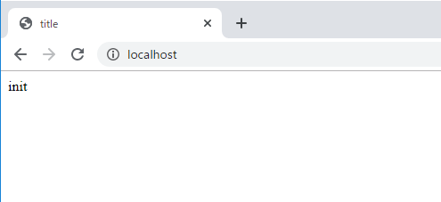
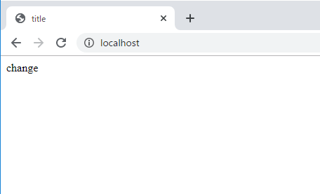

こんにちは。明月です。
前述でReflectionのClassとMethodを扱う方法に関して説明しました。
link - [PHP] Reflection - Class編
link - [PHP] Reflection - Method編
Reflection機能はプログラムを動的に実装するように使うこともありますが、テストのために使うこともあります。
特にReflectionの変数を扱うことではクラスのメンバー変数に直接に参照と修正ができるのでそれぞれのテストケースを作ってUnitテストが可能です。
その話はコンパイルが可能なJavaとC#の話です。PHPはコンパイルが必要ないスクリプト言語なので、実は私の考えではReflectionのvariable機能はそんなに必要が無いと思います。
クラスのデータの流れを確認するようにはvar_dump関数を利用するとprivateデータまでよくみえるからもっと使うところがないと思いますね。
普通はクラスを作れば変数はprivateに設定するほうが基本コーディング規約です。なので、privateタイプの変数にデータを格納、取得することだけ知れば良いと思います。
<?php
class EXClass {
// メンバー変数dataに「init」を格納する。
private $data = "init";
// 外部でメンバー変数dataを取得するようなgetter関数
public function getData() {
return $this->data;
}
}
// ReflectionでEXClassを探す。
$r = new ReflectionClass('EXClass');
// インスタンスを生成する。(new EXClass()と同じ意味)
$obj = $r->newInstance();
// メンバー変数名dataを探す。
$v = $r->getProperty("data");
// private, protectedの場合、外部で取得ができないのでアクセスできるように設定。
$v->setAccessible(true);
?>
<!DOCTYPE html>
<html>
<head><title>title</title></head>
<!-- Reflection variable取得関数を利用して生成したインスタンスの変数を取得 -->
<body><?=$v->getValue($obj)?></body>
</html>
上の例をみれば、EXClassの中で「data」のメンバー変数はprivateに設定されています。まず、そのデータを取得するようにEXClassのインスタンスを生成します。
getProperty関数で変数のオブジェクトを取得してsetAccessible関数で「private」のアクセス修飾子を無効化します。
bodyタグの中でgetValueを利用してobjのインスタンスのdata変数を取得して出力します。

取得しましたから今回は格納してみましょう。
<?php
class EXClass {
private $data = "init";
public function getData() {
return $this->data;
}
}
// インスタンス生成は普通はnewキーワードで生成する。
$obj = new EXClass();
// ReflectionでEXClassを探す。
$r = new ReflectionClass('EXClass');
// メンバー変数dataを探す。
$v = $r->getProperty("data");
// private, protectedのアクセス修飾子を外部で呼出すことができるように設定
$v->setAccessible(true);
// dataのメンバー変数にデータ(change)を格納する。
$v->setValue ($obj,"change");
?>
<!DOCTYPE html>
<html>
<head><title>title</title></head>
<!-- data変数の値をgetDataのgetterで取得して出力する。 -->
<body><?=$obj->getDate();?></body>
</html>
上の例はインスタンスをReflectionで生成したことじゃなく、newキーワードで生成しました。普通の文法ならインスタンスを「new」で生成します。
getValueでメンバー変数を取得できたら、setValueではデータが格納できます。

結果はEXClassのdata変数は「change」という値に変更されたことを確認できます。
link - https://www.php.net/manual/en/class.reflectionproperty.php
Reflectionまで纏めて説明しました。次の投稿からは.htaccessと上のReflectionを利用してapache+php環境でMVCパターンを構成しようと思います。
PHPでMVCモデルに作成が出来たら、JavaやC#みたいにプロジェクト管理がしやすくなると思います。
- [PHP] namespaceとuse2020/02/13 03:00:00
- [CakePHP] RequestとResponseに関して2020/02/12 03:00:02
- [CakePHP] PHPのCakeからAjax要請がある時、jsonタイプ(json_encode関数)でResponseする方法とControllerでViewを選択する方法2020/02/08 03:00:00
- [CakePHP] MVCフレームワークのCakeをインストールする方法2020/02/07 03:00:02
- [PHP] 自動require及びincludeをする方法(spl_autoload_register)2020/02/05 03:00:00
- [PHP] 匿名関数(ラムダ式)とクロージャ(closure)2020/02/04 03:00:00
- [PHP] PHPのコーディング領域とデザイン領域を分離するテンプレートライブラリ Smarty2020/02/02 03:00:00
- [PHP] Reflection - Variable編2020/02/01 03:00:00
- [PHP] Reflection - Method編2020/01/31 03:00:00
- [PHP] Reflection - Class編2020/01/30 03:00:00
- [PHP] エラーページ処理方法(追加: ob_cleanとdie関数使用方法)2020/01/29 03:00:00
- [PHP] 分散設定ファイル(.htaccess) 使用方法2020/01/28 03:00:00
- [PHP] データベース(mariaDB)を連結して使う方法2020/01/24 03:00:00
- [PHP] IOに関して2020/01/23 03:00:00
- [PHP] requireとinclude、そして「@」の使用方法2020/01/22 03:00:00
- [Java] 62. Spring bootでWeb-Filterを設定する方法(Spring Security)2022/03/15 22:16:37
- [Java] JWT(Json Web Token)を発行、確認する方法2022/03/14 19:12:58
- [Java] 61. Spring bootでRedisデータベースを利用してセッションクラスタリング設定する方法2022/03/01 18:20:52
- [Java] 60. Spring bootでApacheの連結とロードバランシングを設定する方法2022/02/28 18:45:48
- [Java] 59. Spring bootのJPAでEntityManagerを使い方2022/02/25 18:27:48
- [Java] 58. EclipseでSpring bootのJPAを設定する方法2022/02/23 18:11:10
- [Java] 57. EclipseでSpring bootを設定する方法2022/02/22 19:04:49
- [Python] Redisデータベースに接続して使い方2022/02/21 18:23:49
- [Java] Redisデータベースを接続して使い方(Jedisライブラリ)2022/02/16 18:13:17
- [C#] Redisのデータベースを接続して使い方2022/02/15 18:46:09
- [CentOS] Redisデータベースをインストールする方法とコマンドを使い方2022/02/14 18:33:07
- [Design pattern] 3-6. ステートパターン(State pattern)2021/11/17 20:04:47
- [Design pattern] 3-5. メメントパターン(Memento pattern)2021/11/16 20:01:36
- [Design pattern] 3-4. イテレータパターン(Iterator pattern)2021/11/15 19:31:28
- [CentOS] Linux環境(CentOS)でCassandra(NoSQL DB)をインストールする方法(DBeaverブラウザでNoSQL使い方)2021/11/12 17:33:58